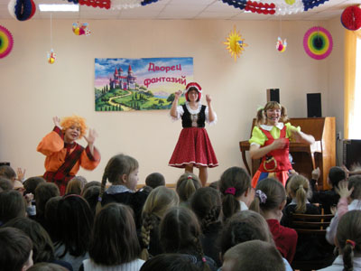
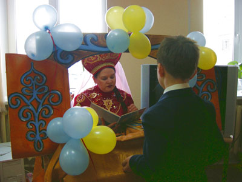

Открытие фестиваля «Читающий город детства»
2 марта в Центральной городской детской библиотеке имени Ш.А.Худайбердина состоялось праздничное открытие фестиваля. В «Читающий город детства» пришли учащиеся начальных классов. В фойе библиотеки ребят встречали знакомые литературные и сказочные персонажи. Они приглашали ребят принять участие в веселых играх и занятиях. На различных площадках дети смогли поиграть в подвижные игры вместе с Буратино и Мальвиной, в литературные игры - с Красной Шапочкой и совсем незлой Бабой Ягой, нарисовать любимых героев книг в студии Феи Фиалки, отгадать мудреные загадки Василисы Премудрой.
А потом все ребята собрались во «Дворце фантазий», где вместе с литературными героями стали участниками самой обыкновенной, но в то же время и фантастически необычной истории. Маленькие гости с азартом включились в творчество: придумывали сказки, отгадывали загадки, играли, танцевали и пели. Наградой им были маленькие призы и аплодисменты друзей. А потом явилась Королева Книг и огласила свое суждение: «Истории сочинять получается не сразу. Вы еще маленькие и вам предстоит прочитать много интересных, умных книг. И когда вы узнаете тысячи историй, то, может быть, сможете написать свою. И каждый, кто любит читать, может прийти в библиотеку и снова прогуляться по Бульвару Загадок, поиграть с друзьями на Проспекте Игр, заглянуть в переулок Радужный и помечтать в нашем Дворце Фантазий. Вас ждут новые встречи, интересные знакомства, конкурсы и, конечно, праздничная Неделя детской и юношеской книги».
В празднике участвовали 160 юных читателей города.
 |
 |
| Другие фото | |
{kind=link}
{kind=link}